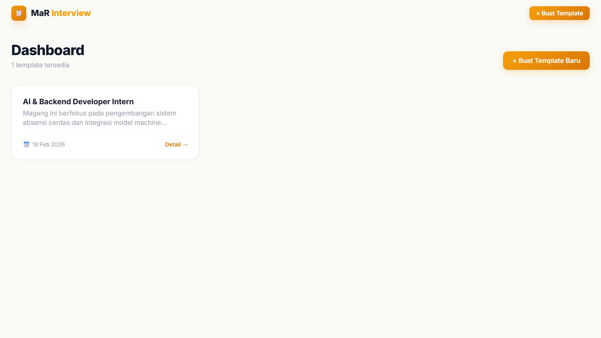
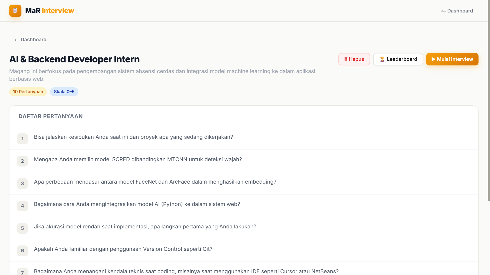
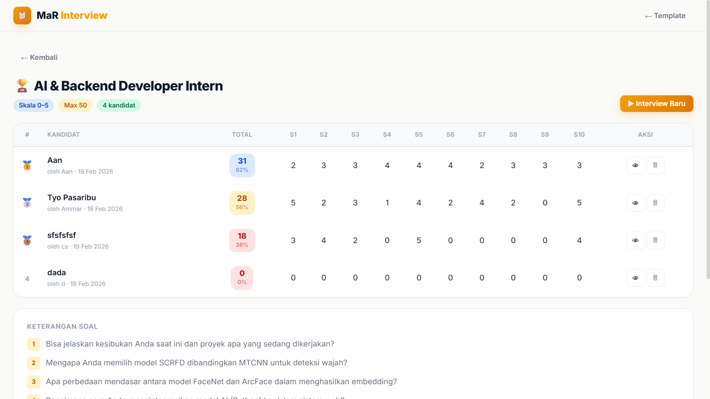

📸 Screenshots




Aplikasi penilaian interview kandidat berbasis web. Membuat template pertanyaan, scoring secara real-time untuk setiap kandidat, dan leaderboard ranking otomatis untuk perbandingan hasil.
| Frontend | HTML, JavaScript, Tailwind CSS (CDN) |
| Backend | Node.js Serverless Functions |
| Database | Supabase (PostgreSQL) |
| Hosting | Vercel |


